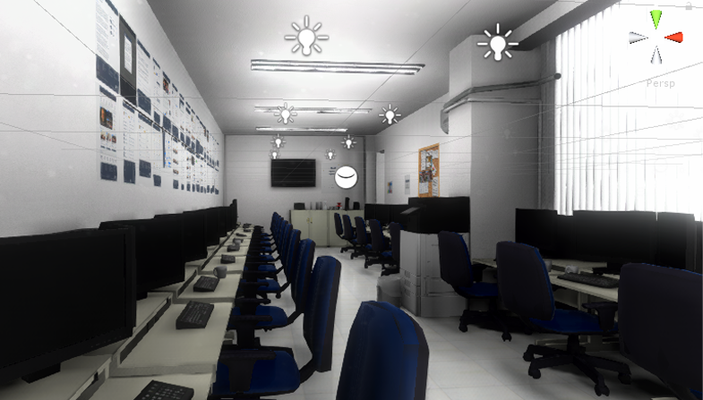
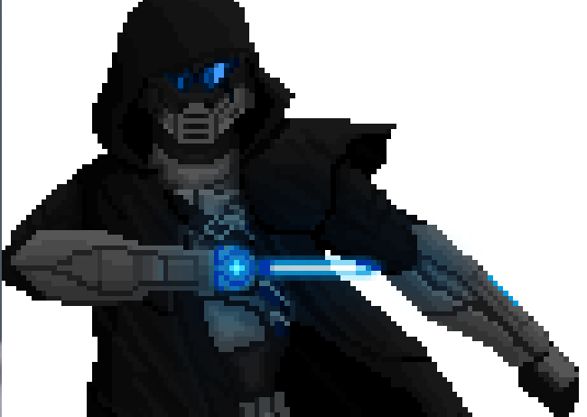
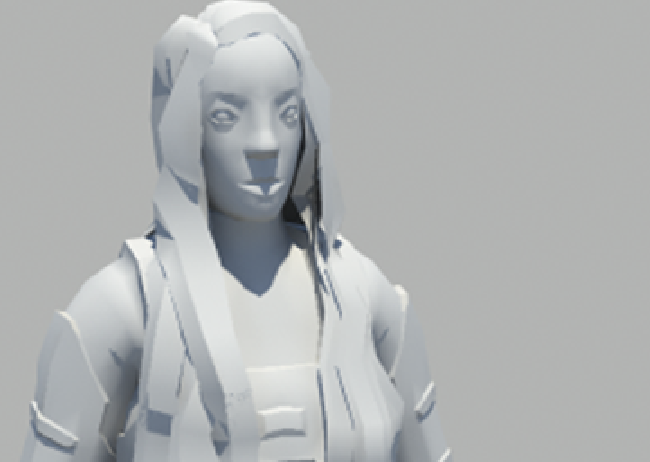
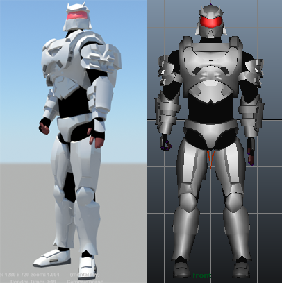
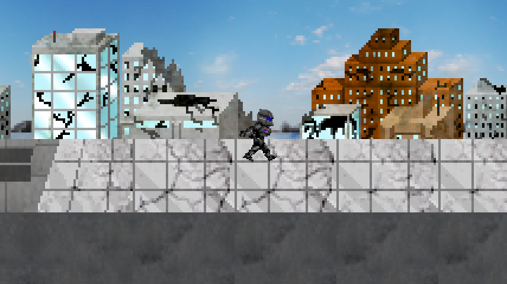
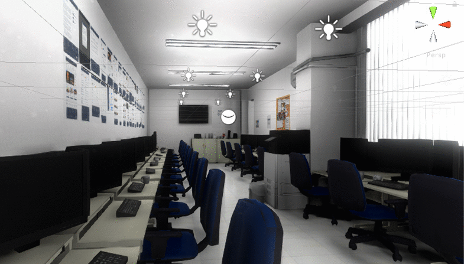
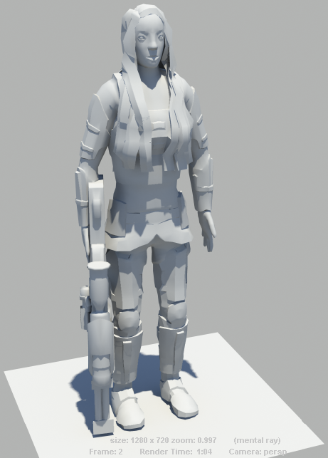
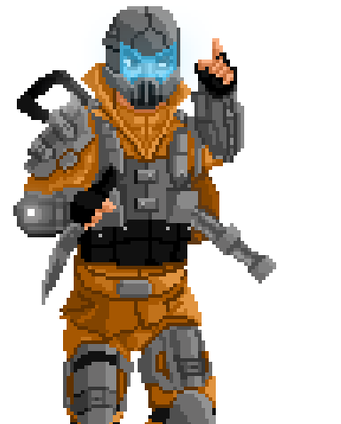

Sou um jovem artista brasileiro, desde 2012 estive estudando e trabalhando em video-games e modelagem 3D e escultura digitas, texturização PBR, e Animação.
Me formei em dois cursos profissionalizantes de games 2, o primeiro, em 2014, Seven Games, que posteriormente virou a Redzero e em 2015 no curso Técnico do Desenvolvimento de Jogos Digitais - SENAI.
Posteriormente, além freelancing, eu trabalhei como estagiário no Ministério Público do Rio de Janeiro, onde trabalhei em um simulador VR de incêndio e tenho sido um professor de modelagem 3D na Code4all e 3D modelador e animmador na Fire Games Studio, os últimos dois são meu trabalho até atualmente.
Em meu trabalho, gosto de explorar o lado mais profundo das obras à que sou designado. Sempre ávido por garantir qualidade, personalidade e profundidade e colocar coração e alma nos meus trabalhos.
Estou disponível para trabalho, seja presencial, freelancer ou Home Office.
Meu Currículo
Arthur de Souza Júnior
Artista 2D e 3D
Contato
Telefone: 21 2492-5136;
Celular: 21 99648-9674;
E-mail: arthurdsjrj@gmail.com;
Rio de Janeiro, Brasil;
Habilidades
Zbrush
Unity
Blender 3D
Programação em C#
Substance Painter
Autodesk Maya
Marvelous Designer
Programação em Python
HTML, CSS, JavaScript
Dublagem
Idiomas
Português (Natural)
Inglês (Fluente)
Chinês Mandarim(Básico)
Espanhol (Básico)
Hobbies
Estudar novas ferramentas
Adquirir conhecimento para auxiliar em roteiros e estórias
Desenvolvimento de projetos pessoais
Escrever Histórias
Modelagem e ampliação de portfólio
Jogar Video-Games
Assistir Animes
Perfil profissional
Sou um jovem de 23 anos cheio de determinação e garra. Sempre faço meu melhor para cumprir prazos e metas com máxima qualidade e eficiência. Além disso, sou hábil no gerenciamento de crises, possuo facilidade de aprendizagem, habilidade para trabalho em equipe, muito criativo e possuo flexibilidade de horário.
Educação:
2015 - Hoje: Universidade Federal Fluminense
Curso universitário de Computação
2014 - 2016 : SENAI Game Development Technician
Curso técnico de desenvolvimento de jogos Digitais
2012 - 2015 : Seven Game/ RedZero
Curso completo do Desenvolvimento de Games
2010 - 2017 : Yázigi Course
Curso de Inglês
Formação em 2014 : Escola Mater/ Colégio São Conrado
Ensino Fundamental e Médio
Experiência Profissional:
2019 - Atualmente : Fire Games Studio
Principal Função: Artista 3D (Modelagem, Animação, Texturização)
2019 - Atualmente : Code4All
Principal Função: professor de Modelagem 3D
2016 - 2018 : Ministério Público do Estado do Rio de Janeiro
Serviço Primário: Artista 3D de Realidade Virtual e Aumentada. Serviços Secundários: Programador Unity C#
2014: SEBRAE
Projeto Desenvolvido: Um Jogo sobre empreendedorismo
2014 : InovApps
Projeto Desenvolvido: Um projeto de jogo educativo para ensinar crianças
2012 - Hoje : Freelancer
Designer e Artista 3D e Desenvolvedor de Jogos
Investimentos Profissionais:
Unreal Engine 4
Marvelous Designer
Substance Designer
3DS Studio Max
Meu Portfólio
Além deste Website, Aqui estão alguns trabalhos e conquistas visuais que atingi ao longo da minha vida!
Eles estão em ordem, do mais recente no topo esquerdo, ao mais antigo na inferioridade direita.
The Doom Marine
Buraco Negro (Unity)
(ver gif)
Fogo Adaptável
(ver gif)
MPRJ Interior
(ver gif)

Adam Blake (Em Progresso)
Sargento Sayra (Em Progresso)
O.M.E.G.A Gabriel

Passarela
Adam Blake (Versão 2.0)
Base Anatômica Masculina Padrão
Toga
Buraco Negro
Prédio
Zakk Wylde Correndo
Zakk Wylde Pixel Art
Rifle Spin ACDG-004
Sargenta Sayra (Ver. 1 da Geometria)

Rifle Lakkiano
Adam Blake (Primeira Versão)

O.M.E.G.A Versão Alfa Screenshot

O.M.E.G.A Giallini
O.M.E.G.A Daniel e Bohriano
Easter Egg de Um Caça Caido
Camarão Pistola
Karma Game Logo
Karma Game Protagonista
×
The Doom Marine (Unity)
Este foi feito como homenagem de fan.
Objetivo: fanart; Nome da Franquia Referenciada: Doom (desenvolvido por Id Software e publicado por Bethesda); Ferramentas:Blender, Zbrush, Photoshop, Substance Painter, Unity Ano: 2020
Buraco Negro (Unity)
Este foi feito para meu projeto pessoal de Game.
Objetivo: Video-games; Nome de Projeto: S.I.G.M.A; Ferramentas: Unity Ano: 2020
Fogo Adaptável
Este foi feito à Trabalho para o Ministério Público. Como o projeto se tratava de uma simulação de incêndio este efeito foi criado este asset é capaz de se adaptar dinâmicamente ao formato do formato que está queimando.
Objetivo: Realidade Virtual (Segurança Institucional); Nome de Projeto: Rota de Fuga; Ferramentas: Unity Ano: 2018
MPRJ Interior

Este foi feito à Trabalho para o Ministério Público.
Objetivo: Realidade Virtual (Segurança Institucional); Nome de Projeto: Rota de Fuga; Ferramentas: Unity, Blender, Photoshop Ano: 2018
Adam Blake (Nova Versão / Trabalho em Progresso)
Este foi feito para meu projeto pessoal de Game.
Objetivo: Video-games; Nome de Projeto: S.I.G.M.A; Ferramentas: Zbrush Ano: 2018
Sargento Sayra (Nova Versão / Trabalho em Progresso)
Este foi feito para meu projeto pessoal de Game.
Objetivo: Video-games; Nome de Projeto: S.I.G.M.A; Ferramentas: Zbrush Ano: 2018
O.M.E.G.A Gabriel
Este foi feito para meu projeto pessoal de Game.
Objetivo: Video-games; Nome de Projeto: O.M.E.G.A; Ferramentas: Photoshop Ano: 2017
Passarela Holográfica
Este foi feita à trabalho no Ministério Público.
O manequim humano desfilando é o mesmo do modelo da Toga, praticamente sem corpo já que a aplicação é para mobile com física de roupa, que já é custosa, então ela deveria ter uma topologia mais simplificada que a base anatômica padrão feita após isto e com menos polígonos o possível, já que estará de roupa, corpo abaixo dela não é necessário. apenas o Rig e Colisores dos Bones.
Objetivo: Realidade Virtual; Nome de Projeto: MemoriAR; Catwalk Contagem de Polígonos: 313 Quads; Ferramentas: Blender, Photoshop, Unity; Mapas: Albedo, Normalmap, ParallaxMap, Emission, Roughness Ano: 2017
Adam Blake (Ver. 2.0)
Este foi feito como um projeto pessoal de Jogo
Objetivo: Video-games; Nome de Projeto: S.I.G.M.A; Contagem de Polígonos: À Checar; Ferramentas: Blender; Ano: 2017
Corpo Masculino Padrão
Este foi originalmente feito para projetos pessoais e trabalho no MP, mas usarei para todos os projetos de personágem.
Objetivo: 3D Character Design (Every); Nome de Projeto: - Qualquer Projeto -; Contagem de Polígonos: 5.382 Quads; Ferramentas: Blender Ano: 2017
Toga
Este foi Feito para Meu Trabalho no Ministério Público
Objetivo: Mobile Realidade Virtual; Nome de Projeto: MemoriAR; Contagem de Polígonos: 313 Quads; Ferramentas: Blender, Zbrush, Photoshop, Unity Mapas: Albedo, Normalmap, Roughness Ano: 2017
Buraco Negro
Este foi feito todo em uma imagem de espaço apenas, feito por estudo.
Objetivo: Portfólio, estudo de Photoshop; Ferramentas: Adobe Photoshop Ano: 2017
Prédio
Este foi Feito para Meu Trabalho no Ministério Público
Objetivo: Mobile Virtual/ Realidade Virtual; Nome de Projeto: ConectAR; Contagem de Polígonos: 892 Quads; Ferramentas: Blender, Photoshop, Unity; Mapas: Albedo, Normalmap, ParallaxMap, Roughness Ano: 2016
Zakk Wylde Correndo
Este foi Feito à pedido de uma amigo e professor para um projeto
Objetivo: Video-games; Nome de Projeto: S.I.G.M.A; Contagem de Polígonos: À Checar; Ferramentas: Autodesk Maya Ano: 2016
Sargenta Sayra

-MODELO ANTIGO E DESCARTADO- Este foi feito como um projeto pessoal de Jogo
Objetivo: Video-games; Nome de Projeto: S.I.G.M.A; Contagem de Polígonos: não-registrado (Cerca de 1 mil de Corpo); Ferramentas: Autodesk Maya Ano: 2016
Rifle Lakkiano (Arma Alienígena)
-MODELO ANTIGO- Este foi feito como um projeto pessoal de Jogo
Objetivo: Video-games; Nome de Projeto: S.I.G.M.A; Contagem de Polígonos: À Checar; Ferramentas: Autodesk Maya Mapas: Albedo, Normalmap Ano: 2016
Adam Blake (Primeira Versão)
Este foi feito como um projeto pessoal de Jogo
-MODELO ANTIGO E DESCARTADO- Objetivo: Video-games; Nome de Projeto: S.I.G.M.A; Contagem de Polígonos: não-registrado (Cerca de 1 mil); Ferramentas: Autodesk Maya Ano: 2016
O.M.E.G.A Game Screenshot
Este foi feito como um projeto para uma Jam, na Coljam Game Jam
-VERSÃO ALFA- Objetivo: Video-games; Nome de Projeto: O.M.E.G.A; S.I.G.M.A Marketing spin-off Ferramentas: Photoshop, Spriter, Construct 2 Ano: 2015
O.M.E.G.A Sergeant Giallini

Este foi feito como um projeto para uma Jam, na Coljam Game Jam
-VERSÃO ALFA- Objetivo: Video-games; Nome de Projeto: O.M.E.G.A; S.I.G.M.A Marketing spin-off Ferramentas: Adobe Photoshop Ano: 2015
O.M.E.G.A Daniel e Bohriano
Este foi feito como um projeto para uma Jam, na Coljam Game Jam
-VERSÃO ALFA- Objetivo: Video-games; Nome de Projeto: O.M.E.G.A; S.I.G.M.A Marketing spin-off Ferramentas: Adobe Photoshop Ano: 2015
Dragon of War Caça Easter Egg
Este foi feito como projeto de conclusão SENAI
-OFICIAl (The Caving), ANTIGO (S.I.G.M.A) MODEL- Objetivo: Video-games; Nome de Projeto: The Caving; S.I.G.M.A Reference easter egg Contagem de Polígonos: À Checar; Ferramentas: Autodesk Maya, Photoshop Ano: 2015
Camarão Pistola (Camarão-de-Estalo)
Este foi feito como um projeto do curso no SENAI
Objetivo: Video-Game de Realidade Virtual; Nome de Projeto: The Caving; Contagem de Polígonos: À Checar; Ferramentas: Autodesk Maya, Photoshop, Unity Mapas: Albedo; Ano: 2015
Karma Game Logo
Este foi feito como um projeto do curso no SENAI
Objetivo: Video-Game; Nome de Projeto: Karma: A Childhood Dream; Ferramentas: Photoshop, Unity Ano: 2014
Karma Game Protagonista
Este foi feito como um projeto do curso no SENAI
Objetivo: Video-Game; Nome de Projeto: Karma: A Childhood Dream; Ferramentas: Photoshop, Unity Ano: 2015